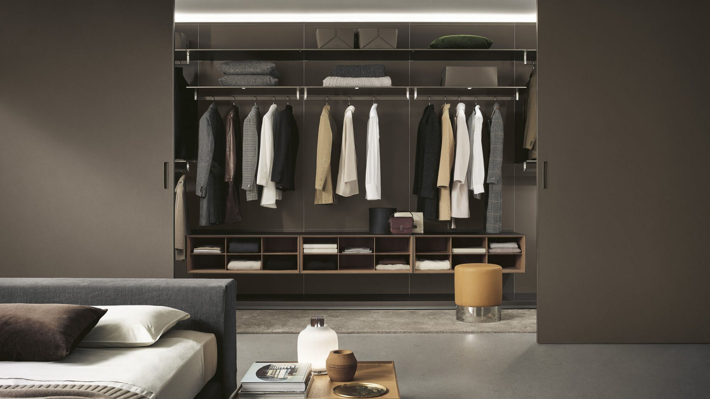
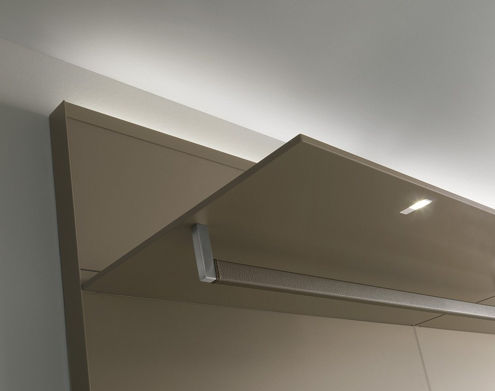
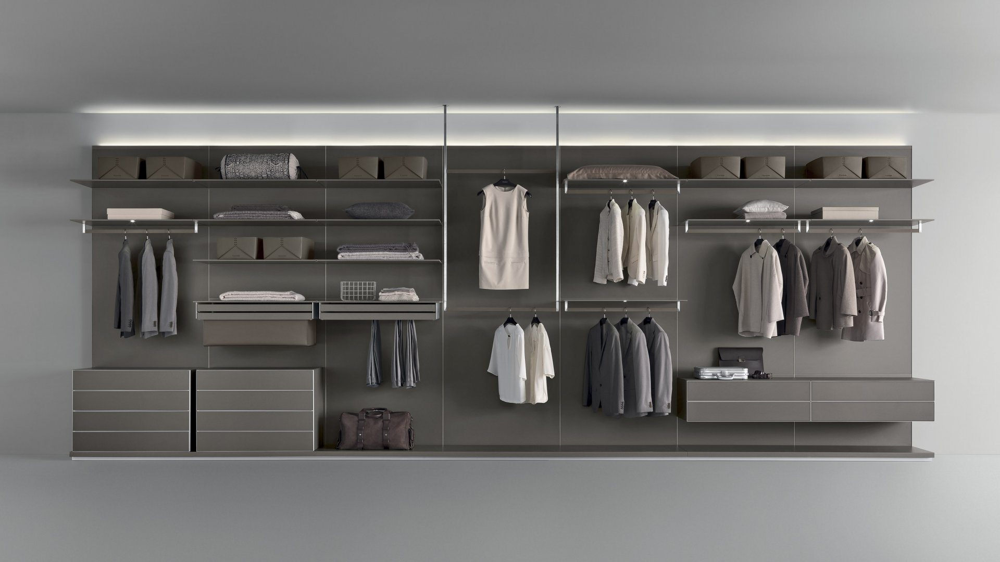
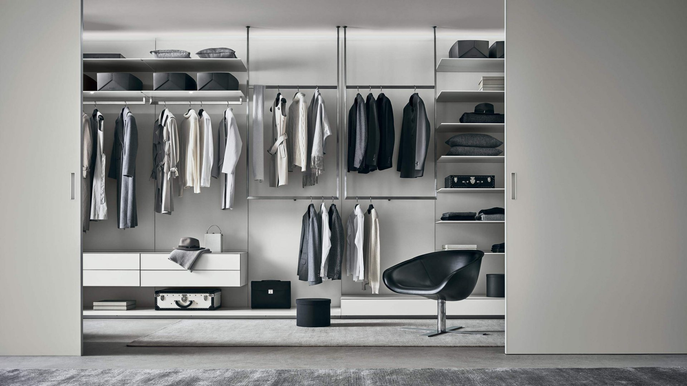
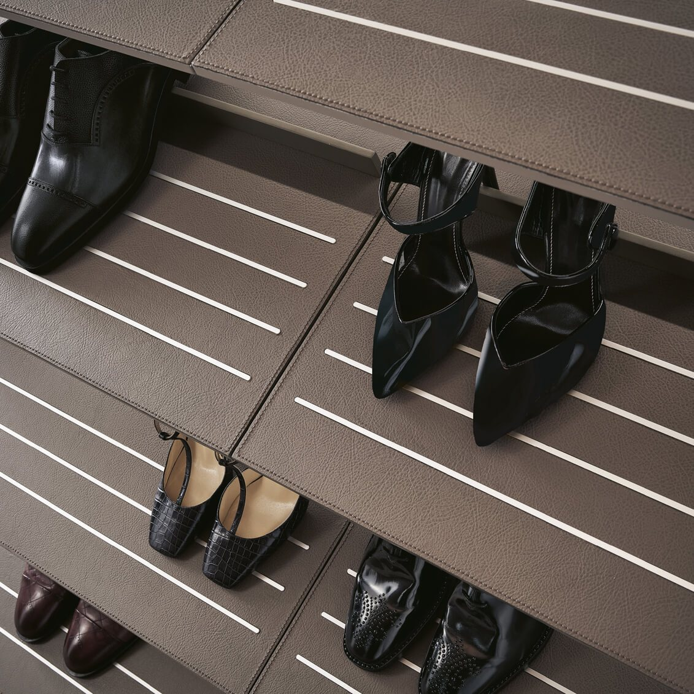
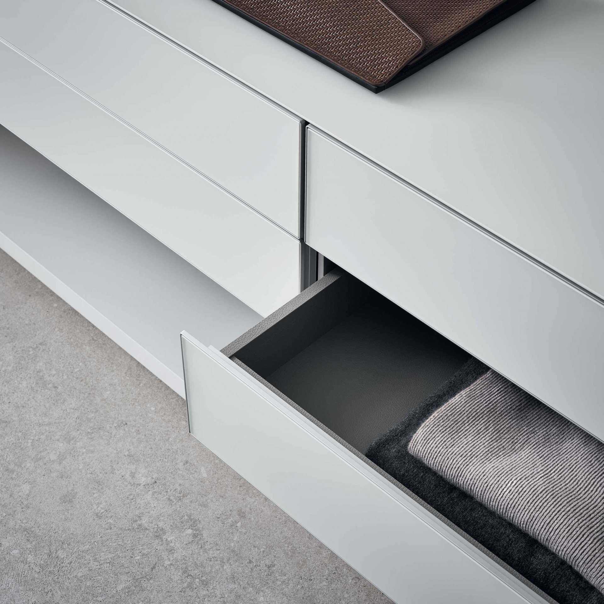
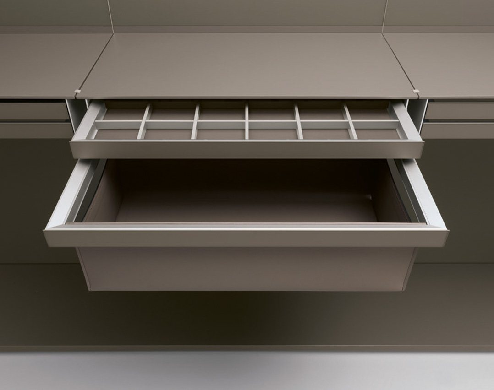
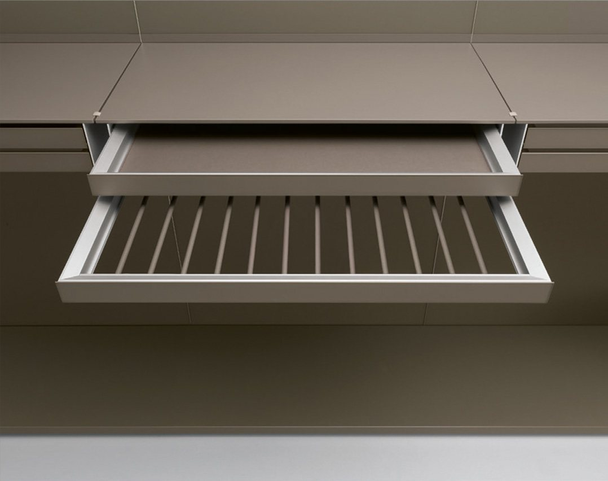

Rimadesio
Гардеробная Abacus
Гардеробная со стеновыми панелями, тонкими алюминиевыми полками и встроенным светом.

Панели, алюминиевые полки и свет
В Abacus стеновые панели служат основой композиции. Тонкие горизонтальные полки и подвесные ящики освобождают поверхность пола и подчёркивают рисунок стены.
- Панели
- Среди вариантов фабрики — лакированное стекло, ткань, рафия и искусственная кожа. Размеры панели выбирают при проектировании.
- Подсветка
- Светодиоды встроены в верхнюю часть панели и размещаются под полками. Верхняя линия подсвечивает стену, нижняя — вещи.
- Наполнение
- В коллекции есть подвесные ящики с фронтами из закалённого лакированного стекла, выдвижные лотки и брючницы.

Композиции и детали






Фото и описание по материалам Rimadesio.
Обсудить проект хранения
Подберём систему, отделки и наполнение под Ваше помещение.